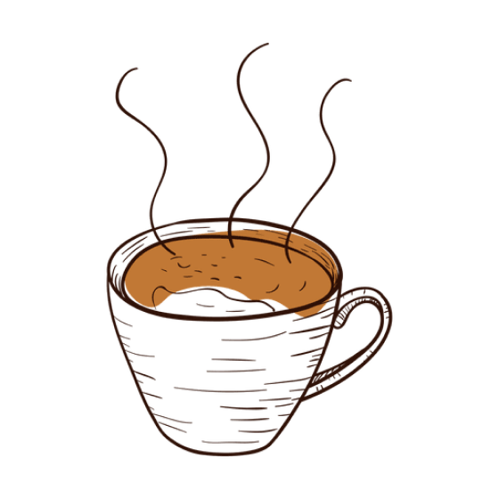

Espresso
₱100.00
Espresso (ess-PRESS-oh) is a full-flavored, concentrated form of coffee that is served in “shots.” It is made by forcing pressurized hot water through very finely ground coffee beans using an espresso machine. The result is a liquid stronger than coffee topped with a “crema,” a brown foam that forms when air bubbles combine with the soluble oils of fine-ground coffee and sits on top of a properly pulled shot of espresso. The crema adds to the rich flavor and lingering aftertaste of espresso.
